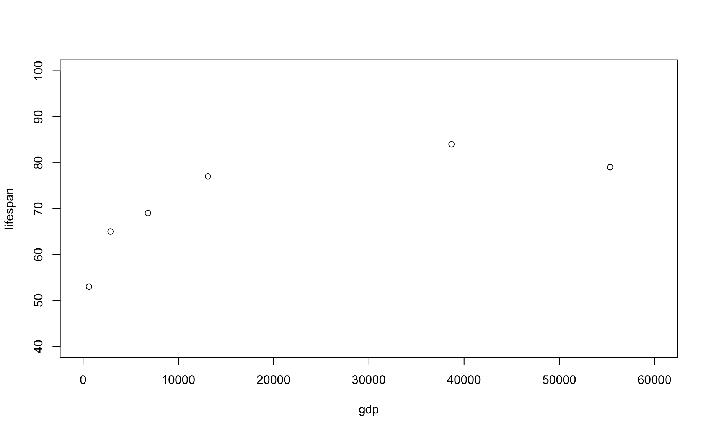
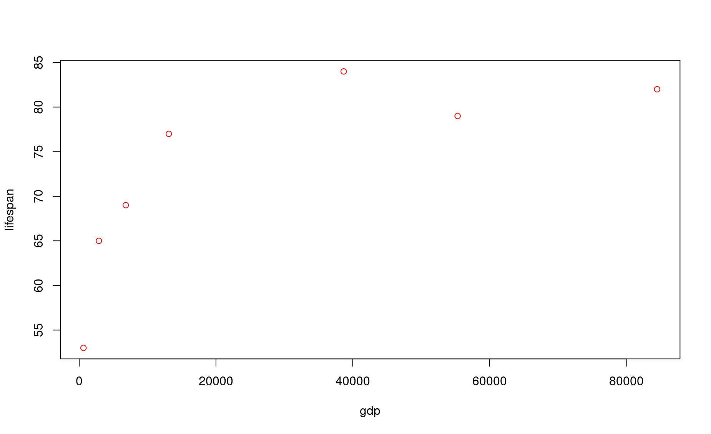

Module 60 Randomization statistics
Learning goals
- Understand what randomization analyses are, and why they are awesome.
- Use randomization to determine if an outcome is significantly unexpected.
- Use randomization to compare two distributions.
- Use randomization to ask whether two variables are correlated
- Use randomization to determine the chances that a correlation is declining or increasing.
Basic idea
Classic significance statistics (i.e., p-values) are based on the frequentist framework in which you estimate the probability of an observed outcome to what would be expected if a null hypothesis were true. In a t-test, for example, you are asking, “What are the chances of observing what I have if these two sample sets were not meaningfully different?”
The key word in that first sentence is estimate. When frequentist theory was originally developed, statisticians did not have computers capable of generating vast amounts of random numbers. So they had to estimate p-values by developing strict rules and expectations about the way data are distributed. These rules had the result of (1) placing a lot of constraints on the way statistsics could be done, (2) forcing the development of increasingly specific tests for each strange sampling scenario, (3) confusing students trying to learn statistics, and (4) requiring the use of simplistic conventions, such as the 0.05 significance threshold, in order to make statistical results somewhat intelligible.
But in the age of R, null distributions no longer need to be theoretical, nor do p-values need to be hypothetical. We can actually calculate p-values based on real null distributions, thanks to the random number generators built into coding languages such as R. The practice of generating real null distributions based on your own specific dataset is known as randomization.
In a randomization routine, you shuffle the variables in your dataset to generate a distribution of outcomes that would be possible according to a null hypothesis. Most null hypotheses reduce to an expectation of no meaningful difference between two (or more) samples, which is to say that any differences between those samples are merely the product of random chance. Such randomly generated variability can be simulated easily in R.
Randomization may seem daunting at first, and it does indeed draw upon some of the higher-order skills in your R toolbag (such as custom functions, for loops, and sometimes even the apply() functions), but once you become oriented you will see how intuitive and simple these analyses can be.
The real advantages of randomization, however, are not for the programmer but for the reader. Randomization results are much easier to interpret and more information-rich than frequentist p-values. The advantages are many:
Rather than trusting a black box statistical test with obscure requirements about data distributions, you are performing the test yourself and building the test using your own data. You have more control and accountability, and no more risk of choosing the wrong statistical test. Because you are using your own data to produce the null distribution, you are able to retain the quirks of your own particular dataset; the limitations and inconsistencies in your sampling will be safely propagated into the statistic and properly reflected in the ucertainty of your results.
The interpretation of your p-value will be more intuitive. Rather than saying that some result is or is not significant based upon an arbitrary threshold such as 0.05, you can speak about the chances of meaningful results: “There is a 89% chance that these two sample sets are meaningfully different.” “There is a 92% chance that this trend is increasing.” These kinds of results are easier to interpret, and it avoids the need to make sense of p-values.
Finally, your statistical test returns much more than a p-value; it returns the null distribution too, which can be of enormous value in more complicated statistical analyses.
Generalized randomization workflow
Define your research question.
Define the null model that you wish to compare your observations against. This involves determining which variable you will need to shuffle.
Create a function that calculates the value of interest.
Use that function to determine the observed value of interest.
Use a
forloop to build a null distribution by shuffling your observations withR’s random number generators.Visualize your results to sanity-check what you are finding.
Calculate your p-value, by asking what proportion of the null distribution falls below the observed value.
The examples below will show you how to appy this generalized workflow. Note that we are purposefully applying randomization to scenarios in which classic statistical tests, such as t-tests and linear models, could also be used. We do so because those scenarios are relatively simple, they demonstrate the comparability of randomization to approaches you may already be familiar with, and they hint at the advantages of randomization over those other approaches. But the true value of randomization lies in its ability to carry out statistics when all other conventional tests fail; we hint at that value in the final use case.
Common use cases
1. Is outcome X significantly unexpected?
To practice this use case, let’s use the dataset humpback-whales.csv: 15 years of sightings of humpback whales within a fjord system in northern British Columbia, Canada (www.bcwhales.org).
Each individual whale in this dataset was identified using unique patterns on its tail, so each whale has an ID number.
[1] 4436 year sit bhvr id
1 2004 2004070701 BNF 42
2 2004 2004071401 BNF 42
3 2004 2004071401 BNF 59
4 2004 2004080301 BNF 30
5 2004 2004080401 MI-FE 106
6 2004 2004080401 MI-FE 114Each row shows a whale (column id) identified during a single sghting (column sit). Some sightings were of a single solo individual, but others were of groups of two or more individuals.
Our interest here is in these whales’ social behavior: do they have “friendships”, i.e., certain individuals that they prefer to associate with over others, or are they just randomly swimming around and bumping into one another?
Let’s tackle this one step at a time.
Step 1: Our research question is, Do any pairs of whales occur together an unexpectedly persistent social bonds? Since in science we are always limited by how well we sample the population of interest, a more precise version of our research question would be this: Based on this dataset, can we conclude whether or not any pairs of whales occur together an unexpectedly large number of times?
Step 2: The null model for this question is simple random mixing: there is no pattern to which whales occur in which group. So the variable that we will need to shuffle is the id column. With this approach, we be able to preserve the number of times each individual is seen and the total number of observations. So the limitations and inconsistencies in our sampling of each individual will be safely propagated into our statistics and properly reflected in the uncertainty of our results.
Step 3: So we need a function that returns the number of times two whales are associated. We will call this function association_tally().
association_tally <- function(hw,A,B){
siti <- hw$sit[hw$id==A]
sitj <- hw$sit[hw$id==B]
common_sits <- which(siti %in% sitj)
X <- length(common_sits)
return(X)
}Step 4: For our observed association tally, we will focus in on a single pair of humpback whales: IDs 59 and 11.
[1] 71That’s alot of associations! Let’s see if that observation is statistically significant:
Step 5: The for loop for our null distribution will look like this:
nulls <- c()
for(i in 1:1000){
hw_null <- hw # save a safe copy of the data
hw_null$id <- sample(hw_null$id,size=nrow(hw_null),replace=FALSE) # shuffle the null variable
nulli <- association_tally(hw_null,A="59",B="11") # determine null rate for this iteration
nulls[i] <- nulli # save result
}Note! Here we only iterate our for loop 1,000 times, but most published randomizations are run for 5,000 to 10,000 iterations, just to ensure that the null distribution is adequately unbiased.
Step 6: To visualize these results, use a histogram:
par(mar=c(4.2,4.2,1,1))
hist(nulls,breaks=seq(0,25,by=1),xlim=c(0,(obs+10)),main=NULL,xlab="Null distribution")
abline(v=obs,lwd=2,lty=3,col="blue")
Step 7: Finally, we calculate our p-value:
[1] 0Let’s do this again with a different humpback pair, IDs 16 and 118, who were seen together only 13 times. Is their association rate statistically significant?
# Individual IDs
A <- "58"
B <- "133"
# Observed association rate
obs <- association_tally(hw,A=A,B=B)
obs[1] 9# Generate null model
nulls <- c()
for(i in 1:1000){
hw_null <- hw
hw_null$id <- sample(hw_null$id,size=nrow(hw_null),replace=FALSE)
nulli <- association_tally(hw_null,A=A,B=B)
nulls[i] <- nulli
}
# Visualize
hist(nulls,breaks=seq(0,20,by=1),xlim=c(0,(obs+7)),main=NULL,xlab="Null distribution")
abline(v=obs,lwd=2,lty=3,col="blue")
[1] 0.02In this case, the observed association rate is still statistically significant at the conventional 0.05 level, but there is still an off chance that this is merely the result of random mixing.
2. Are two sample sets significantly different?
Building off of the whale scenario: Some of these whales have learned how to practice bubble-net feeding, a remarkable feeding strategy that requires group cooperation and special techniques for catching schooling fish such as herring. Other individuals have never been seen bubble net feeding. Are there any differences how often these two populations – the bubble netters and the “others” – use the study area?
First, let’s see how many of these individuals are known to bubble net feed:
[1] 108So, out of 132 individuals, 108 are known to practice bubble netting.
Let’s go through the steps:
1. Research question: Is there any difference in the number of years in which bubble-netters are seen compared to other whales?
2. Null model: In this case, the null model will be a distribution of average differences in the number of years in which individuals from the two populations are seen. This null distribution will be centered around zero. The variable we will shuffle is which individuals are known bubble netters, keeping the size of the two populations constant in each iteration.
3. Function:
annual_difference <- function(hw,bnf_ids){
bnf <- hw[hw$id %in% bnf_ids,] # Sightings of known BNFers
other <- hw[! hw$id %in% bnf_ids,] # Sightings of other whales
# Get distribution of years seen for individuals within each population
counts <- table(bnf$id,bnf$year) # sightings of each whale (rows) in each year (columns)
n_bnf <- apply(counts,1,function(x){length(which(x>0))}) # years seen for each individual
counts <- table(other$id,other$year) # sightings of each whale (rows) in each year (columns)
n_other <- apply(counts,1,function(x){length(which(x>0))}) # years seen for each individual
# Now get average difference between two distributions
mean_diff <- mean(n_bnf,na.rm=TRUE) - mean(n_other,na.rm=TRUE)
return(mean_diff)
}4. Observed value:
[1] 2.3518525. Build null distribution:
nulls <- c()
for(i in 1:1000){
bnf_null <- sample(unique(hw$id),size=length(bnf_ids),replace=FALSE)
nulli <- annual_difference(hw, bnf_ids=bnf_null)
nulls[i] <- nulli
}6. Visualize:
hist(nulls,breaks=seq(-5,5,by=.1),xlim=c(-5,5),main=NULL,xlab="Null distribution")
abline(v=obs,lwd=2,lty=3,col="blue")
7. p-value:
[1] 0.005So there is indeed a significant difference in the annual site fidelity in the two populations! Bubble net feeders practice higher annual return rates than other whales (p = 0.005).
3. Are two variables correlated?
To perform a correlation analysis with randomization, let’s use a classic scenario from marine conversation: We have abundance estimates for a critically endangered porpoise from four years across two decades of research. This species only has a handful of individuals left in the wild.
year N
1 2000 12.547943
2 2000 5.932797
3 2000 17.291144
4 2000 2.707317
5 2000 12.279161
6 2000 8.945810Each row of this dataset is an abundance estimate from a survey that occurred within the vaquita’s range during a certain year.
plot(df$N ~ df$year,ylim=c(0,20),
xlab="Year",
ylab="Total Abundance",
col=adjustcolor("black",alpha.f=.6))
Performing a simple linear regression with this dataset yields the following results:

The slope appears to be negative, but the regression has a non-significant p-value (p=0.22) and a very small correlation coefficient:
Call:
lm(formula = df$N ~ df$year)
Residuals:
Min 1Q Median 3Q Max
-7.6841 -3.3981 -0.3879 3.0338 8.6945
Coefficients:
Estimate Std. Error t value Pr(>|t|)
(Intercept) 173.63645 133.70824 1.299 0.198
df$year -0.08216 0.06657 -1.234 0.221
Residual standard error: 4.221 on 82 degrees of freedom
Multiple R-squared: 0.01824, Adjusted R-squared: 0.006268
F-statistic: 1.523 on 1 and 82 DF, p-value: 0.2206These results may compel some conservation skeptics to stop worrying about the porpoise. “Yes, the population is small, but it appears stable, and there is no evidence that it is decreasing.” This is a situation in which using a randomization regression analysis could give us more information and help us speak more precisely about the risks to which this population is exposed.
Let’s go through the steps:
1. Research question: Is there a trend in porpoise abundance over time?
2. Null model: There is no trend; the abundance estimates might as well come from any given year and the trendline would look the same.
3. Function: Get the slope estimate for the time series.
df_lm <- function(df){
lmi <- lm(df$N ~ df$year)
slopi <- summary(lmi)$coefficients[2,1]
rsqu <- summary(lmi)$r.squared
return(c("slope"=slopi,"r"=rsqu))
}4. Observed value:
slope r
-0.08216195 0.01824031 5. Build null distribution:
nulls <- data.frame()
for(i in 1:1000){
df_null <- df
df_null$year <- sample(df_null$year,size=nrow(df_null),replace=FALSE)
nulli <- df_lm(df_null)
nulli <- data.frame(slope=nulli[1],r=nulli[2])
nulls <- rbind(nulls,nulli)
}6. Visualize:
par(mfrow=c(1,2))
hist(nulls$slope,breaks=seq(-1,1,by=.01),xlim=c(-.5,.5),main=NULL,xlab="Null distribution",border="grey70")
text(-.48,20,"Slope \nestimate",pos=4)
abline(v=obs[1],lwd=2,lty=3,col="blue")
hist(nulls$r,breaks=seq(0,1,by=.001),xlim=c(0,.1),main=NULL,xlab="Null distribution",border="grey70")
text(.06,20,"Correlation \ncoefficient",pos=4)
abline(v=obs[2],lwd=2,lty=3,col="blue")
7. p-value:
Significance of slope:
[1] 0.894This indicates that the chance that the slope is lower than the null expectation is 89.4%.
Significance of correlation coefficient:
[1] 0.234This indicates that the observed regression is better than 76.6% of scenarios that might be expected under the null expectation.
4. Is the slope of a regression line negative?
Sometimes we have even less data about an endagered species. Let’s say we go out in 2021 for another porpoise survey and come up with these estimates from the species’ range:
[1] 4.4322877 6.8533235 4.8873741 5.1181677 1.8757801 1.9601044
[7] 1.9066440 0.9298865 2.1684219 0.6048407 1.2712383 3.7933765
[13] 6.4784822 3.2691435 2.0669715 0.8664138 1.0884850 10.8475055
[19] 4.0022647 2.1279423 2.2783564 4.9787683 1.5188393 5.3242672
[25] 0.5290328We want to know what the chances are that the population has declined between 2017 and 2021.
n2017 <- df$N[df$year==2017]
plot(1,type="n",ylim=c(0,15),xlim=c(2015,2023),
xlab="Year",
ylab="Total Abundance",
col=adjustcolor("black",alpha.f=.6))
points(n2017 ~ rep(2017,times=length(n2017)))
points(n2021 ~ rep(2021,times=length(n2021)))
If this is all we have, what can we say about the status of this endangered species? With such a low sample size and so much variability, it can be really hard to produce significant or even compelling results. Well, what are the chances that this population is in decline? That is a question that a simple linear model cannot tell us.
In this case, our null model will be the distribution of differences of values drawn randomly from the two years’ datasets.
And in this randomization application, the workflow is a bit more simplified. We don’t need a core function, and we don’t even need a for loop.
# Randomly draw from the 2017 dataset 5,000 times
r2017 <- sample(n2017,size=10000,replace=TRUE)
# Do the same for the 2017 dataset
r2021 <- sample(n2021,size=10000,replace=TRUE)
# Get the difference of these two datasets
diffs <- r2021 - r2017
# Visualize
hist(diffs,breaks=seq(-20,20,by=1),xlim=c(-20,20),main=NULL,xlab="Null distribution",border="grey70")
abline(v=0,lwd=2,lty=3,col="blue")
# Get p_value
p_value <- length(which(diffs >= 0)) / length(diffs)
# Convert to chances of decline
chances_of_decline <- 100*(1 - p_value)
chances_of_decline[1] 84.43The chances that this population is in decline is 84.43%.
Review assignment
Let’s return to the humpback whale scenario
(b) Are bubble net feeders more closely related to each other?
In 2019, researchers took DNA samples from 36 individuals in this dataset. They collected the samples by flying drones through the whale’s spouts and harvesting DNA from their snot! GROSS!!! But also super RAD!
Using these genetic samples, the researchers determined the relatedness of each pair of individuals they sampled. Those results are provided in the dataset humpback-kinship.rds.
And here is a key providing the IDs of these 36 whales and their status as a known bubble net feeder.
Use these datasets within a randomization routine to determine whether known bubble netters are more closely related to each other than they are to other whales.
Answer key:
[1] 23# Core function
kinship_difference <- function(kinship,bnf_status){
bnf_ids <- bnf_status$id[bnf_status$bnf]
other_ids <- bnf_status$id[! bnf_status$bnf]
bnf_rows <- which(row.names(kinship) %in% bnf_ids)
kin_bnf <- kinship[bnf_rows,bnf_rows]
kin_other <- kinship[-bnf_rows, -bnf_rows]
mean_diff <- mean(as.matrix(kin_bnf)) - mean(as.matrix(kin_other))
return(mean_diff)
}
# Observed
obs <- kinship_difference(kinship,bnf_status)
obs[1] -0.02804407# Null distribution
nulls <- c()
for(i in 1:1000){
bnf_null <- bnf_status
bnf_null$bnf <- sample(bnf_null$bnf,size=nrow(bnf_null),replace=FALSE)
nulli <- kinship_difference(kinship,bnf_null)
nulls[i] <- nulli
}
# Visualize
par(mar=c(4.2,4.2,1,1))
hist(nulls,breaks=seq(-6,6,by=.002),xlim=c(-.1,.05),
main=NULL,xlab="Null distribution",border="grey70")
abline(v=obs,lwd=2,lty=3,col="blue")
[1] 0.37(c) Do social bonds relate to kinship?
Finally, let’s ask whether the strength of social bonds is generally correlated to kinship. In other words, is this population assorting according to relatedness?
For your convenience, the social association rate for these 36 individuals has also been summarized in the dataset humpback-sociality.rds.
Answer key:
# Core function
kin_soc <- function(kinship,sociality){
ids <- row.names(kinship) ; ids
mr <- data.frame()
i=1 ; j=10
for(i in 1:length(ids)){
idi <- ids[i] ; idi
kin_row <- which(row.names(kinship)==idi) ; kin_row
soc_row <- which(row.names(sociality)==idi) ; soc_row
for(j in 1:length(ids)){
idj <- ids[j]; idj
kin_col <- which(colnames(kinship)==idj) ; kin_col
soc_col <- which(colnames(sociality)==idj) ; soc_col
mri <- data.frame(A=idi,B=idj,
kinship=kinship[kin_row,kin_col],
sociality=sociality[soc_row,soc_col])
mri
mr <- rbind(mr,mri)
}
}
mr
# remove navelgazers
navels <- which(mr$A==mr$B) ; navels
mr <- mr[-navels,]
#plot(sociality~kinship,data=mr)
lmi <- lm(mr$sociality ~ mr$kinship)
#abline(lmi)
slopi <- summary(lmi)$coefficients[2,1]
rsqu <- summary(lmi)$r.squared
return(c("slope"=slopi,"r"=rsqu))
}
# Observed
obs <- kin_soc(kinship,sociality)
obs slope r
-0.000250926843 0.000002521563 # Null distribution
nulls <- data.frame()
for(i in 1:500){
kin_null <- kinship
kin_null <- kin_null[sample(1:nrow(kin_null),size=nrow(kin_null),replace=FALSE),]
row.names(kin_null) <- row.names(kinship)
nulli <- kin_soc(kin_null,sociality)
nulli <- data.frame(slope=nulli[1],r=nulli[2])
nulls <- rbind(nulls,nulli)
}
# Visualize
par(mfrow=c(1,2))
hist(nulls$slope,breaks=seq(-1,1,by=.0005),xlim=c(-.02,.02),main=NULL,xlab="Null distribution",border="grey70")
text(-.48,20,"Slope \nestimate",pos=4)
abline(v=obs[1],lwd=2,lty=3,col="blue")
hist(nulls$r,breaks=seq(0,1,by=.0001),xlim=c(0,.01),main=NULL,xlab="Null distribution",border="grey70")
text(.06,20,"Correlation \ncoefficient",pos=4)
abline(v=obs[2],lwd=2,lty=3,col="blue")
[1] 0.588# P-value of correlation coefficient
p_value <- length(which(nulls$r >= obs[2])) / nrow(nulls)
p_value[1] 0.942# How to interpret this correlation coefficient?
# Could it be said that the correlation is unexpectedly POOR?
# As in, the correlation coefficient is worse than > 95% of outcomes expected under the null distribution?
# In other words, whales of closer relatedness AVOID each other? At least a hypothesis...Other Resources
NOTE: Under construction!